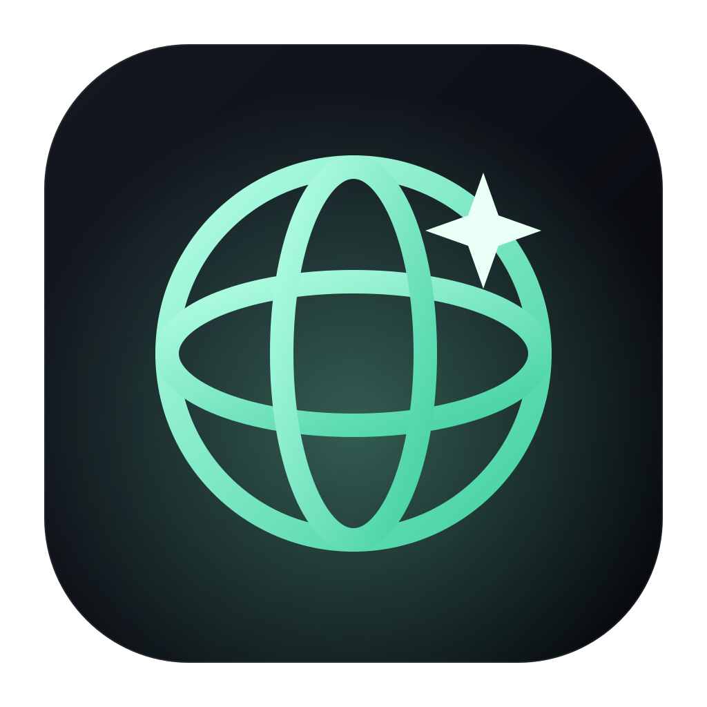

Finished

Any video — MP4, MKV, AVI, WMV and more — plus 3D, 180° and 360° VR, with real-time GPU upscaling and AI super-resolution.
or drop a file anywhere · O open · ? shortcuts
Enter your ZimaOS / NAS address, e.g. 192.168.1.50 (port 8095 is added for you). Your phone must be on the same network.